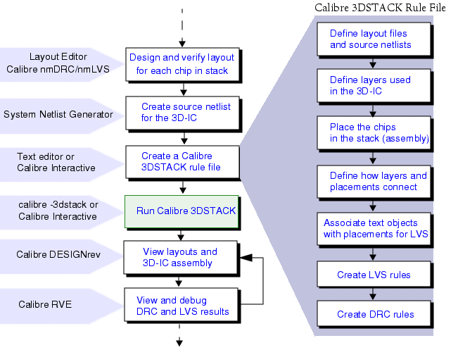

xxx
Calibre 3DSTACK Flow Example
This example steps you through the complete flow for creating a new rule file for your 3D-IC.
Calibre 3DSTACK Rule Creation and Verification Flow

Example Design Information
Preparing the Dies for Assembly
Creating the Calibre 3DSTACK Rule File
Writing Assembly Operations in the Calibre 3DSTACK Rule File
Writing Verification Checks in the Calibre 3DSTACK Rule File
Parent Topic:
Examples
Calibre® 3DSTACK User’s Manual, v2021.2
Unpublished work. © 2021 Siemens
Browser Requirements